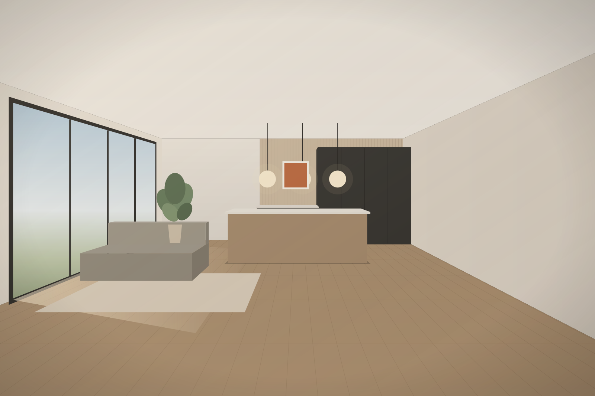
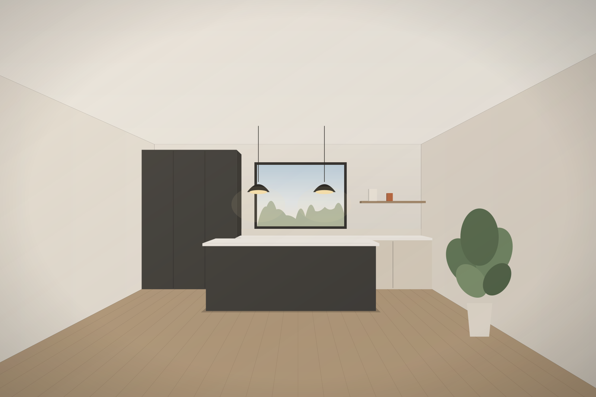
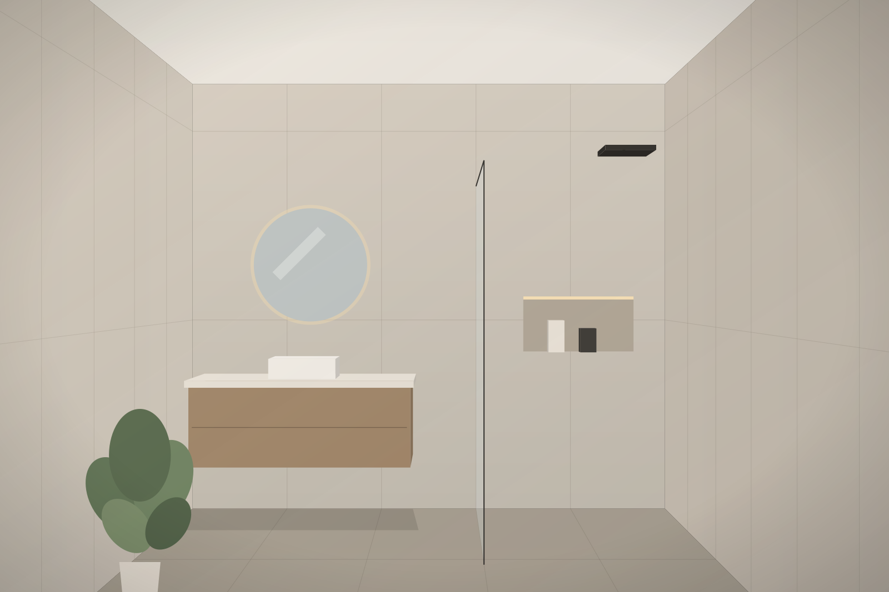
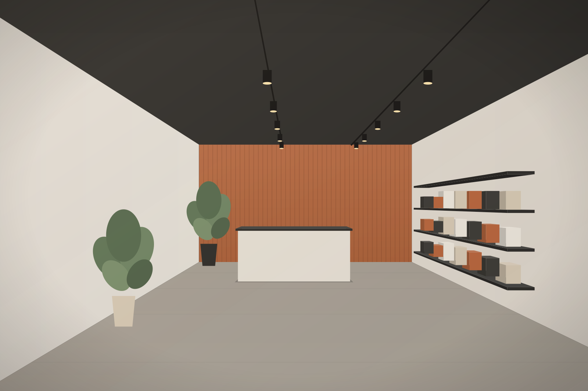
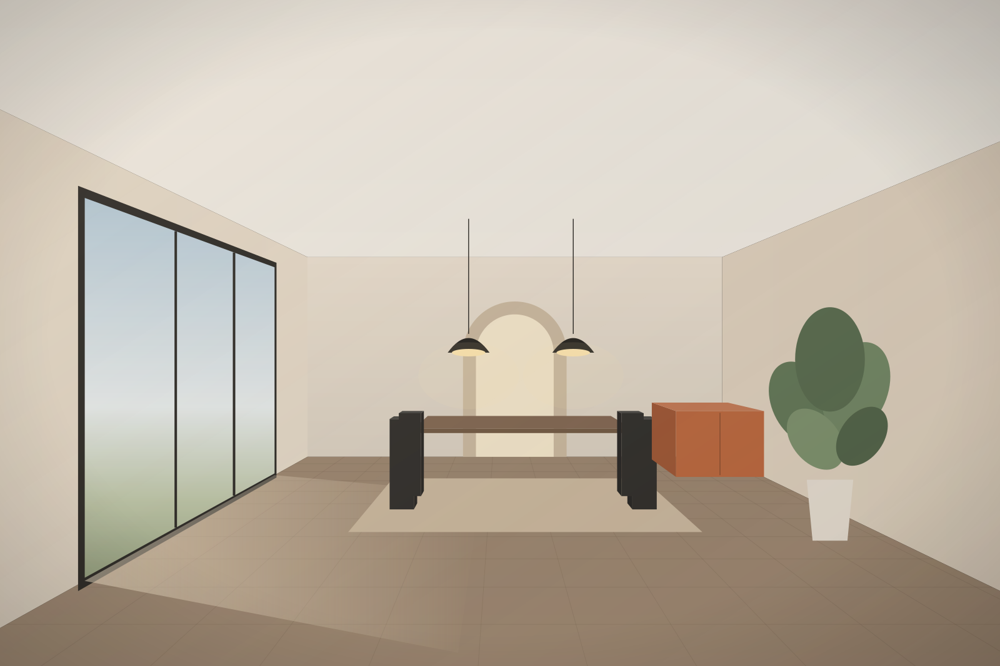
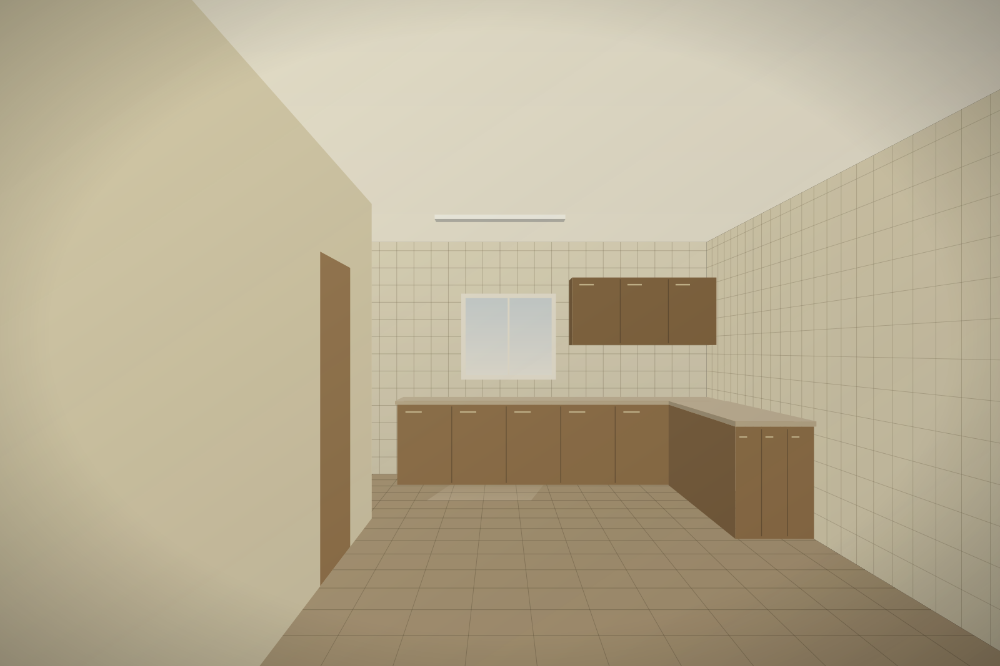

Reformas y proyectos
Reformar es volver a proyectar tu espacio.
Reformas integrales, cocinas, baños y locales en Sevilla y el Aljarafe. Antes de levantar una sola baldosa, pensamos la distribución, la luz y cómo vas a vivir el espacio.

Salón · cocina abiertos
- 01Reformas integrales
- 02Cocinas
- 03Baños
- 04Locales
- 05Proyectos y redistribución
Una reforma no empieza en la obra. Empieza en el plano: qué tabique sobra, por dónde entra la luz, dónde se cocina, dónde se descansa. Lo demás es ejecutarlo con cuidado.
Qué hacemos
Cinco tipos de trabajo, un mismo criterio: entender el espacio antes de tocarlo.
- 01 Reformas integrales La vivienda completa como un solo proyecto: distribución, instalaciones y acabados pensados juntos, no por partes.
- 02 Cocinas Cocinas cerradas, abiertas o con isla. Recorridos de trabajo, almacenaje y la relación con el salón.
-
03
Baños
Del baño de bañera al plato de ducha, revestimientos, mueble y luz. Espacios pequeños resueltos con precisión.

-
04
Locales
Adecuación de locales para que el espacio trabaje para el negocio: circulación, mostrador, exposición e iluminación.

-
05
Proyectos y redistribución
Replantear cómo se organiza la casa: abrir, unir o dividir estancias según cómo vives hoy.

Proyectos y redistribución
Muchas casas no necesitan más metros, necesitan otros metros. Mover un tabique, abrir la cocina al salón o ganar un baño cambia la forma de vivir más que cualquier acabado.
Antes de presupuestar, se dibuja: así ves la propuesta sobre plano y decides con información.
- Muro existente
- Se elimina
- Tabique nuevo
Portfolio visual
Galería de muestra con escenas ilustradas. Aquí irán las fotografías reales de las obras de Moreno & Casado.
Antes / después

Cocina — se elimina el tabique, se abre al salón y se renuevan suelo, mobiliario e iluminación.Comparativa ilustrada de ejemplo
De la idea a la entrega
Un recorrido claro, para que sepas en qué punto está tu reforma y qué viene después.
Empezar por el paso 1-
1
Primera conversación
Nos cuentas qué quieres cambiar y por qué. Fotos, medidas aproximadas o un plano, si lo tienes, ayudan desde el principio.
-
2
Visita y toma de medidas
Vemos el espacio en persona: estado actual, instalaciones, luz y lo que condiciona la obra.
-
3
Propuesta y presupuesto
Distribución, materiales y presupuesto desglosado para que decidas sabiendo qué incluye cada partida.
-
4
Obra
Ejecución ordenada por fases, con un punto de contacto para resolver dudas durante los trabajos.
-
5
Entrega
Repaso final juntos, limpieza y entrega del espacio listo para vivir o abrir al público.
Cuéntanos tu proyecto.
Rellena tres datos y se abrirá WhatsApp con el mensaje preparado. Sin compromiso.